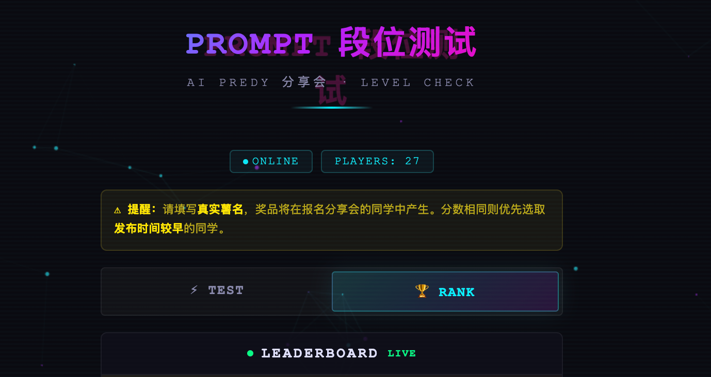

FEATURED PROJECTS
精选项目
悬停翻转查看详情 · Hover or tap to flip

01 · AI 互动游戏
AI · INTERACTIVE
AI Predy 互动游戏
用 Vibe Coding 把 AI 能力做成一个能「玩」的小游戏——这是我对「AI 不只是工具，而是一种新的体验形态」的具体回答。从产品玩法、视觉到代码，全部独立完成。

02 · 网页设计
WEB · DESIGN
展示网页设计
从 0 到 1 与 AI 协同设计开发的个人展示网页（建议电脑端访问）。它既是我的作品，也是我把「内容审美 + 工程能力」两条线长在一起的体现。

03 · 编码实验
CODE · NARRATIVE
Odyssey Guide
自主编码的沉浸式叙事导览网页——从零到一独立搭建，探索用代码表达人文叙事的边界，是 AI Native 工作流下的一次技术实践。